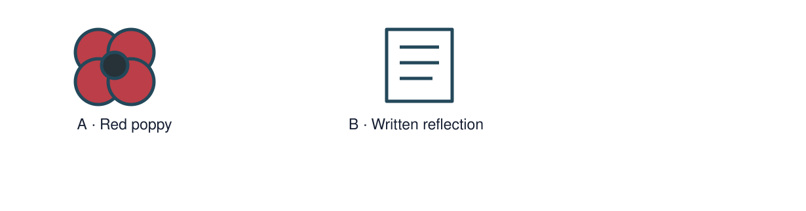

Arrival choices
Previous lesson reminder:

Start with 1 and 2. Try 3 and 4 when ready. Reading and exact scribing are available.
1 What comes first in our family’s plan?
Support: Use the reminder strip or talk it through with an adult.
2 Which meaning fits remembrance?
Support: Choose: Taking time to remember people and events OR Living without conflict or violence.
3 Why might people remember people affected by conflict?
Support: Use the model evidence anchor A or read one relevant card together.
4 What makes a caption respectful and useful?
Support: Give a reason when ready.
Stretch: use a precise example or explain which detail supports your answer.
Evidence cards
Read, point or listen. Keep the source label with any detail you use.
A The red poppy
The Royal British Legion describes the red poppy as a symbol of remembrance and hope for a peaceful future. It also shows support for the Armed Forces community.
Source: Paraphrase of the Royal British Legion: The poppy
Limit: This explains the Legion’s poppy. People also remember in other ways.
B A personal choice
Wearing a poppy is a personal choice. Someone can show respect by listening, learning or choosing another thoughtful response.
Source: Royal British Legion on personal choice; classroom examples authored
Limit: Do not decide someone’s beliefs or respect from whether they wear a symbol.
C A quiet remembrance caption
Authored example: We remember lives and experiences affected by conflict. We learn carefully from the past and hope for peace.
Source: Original classroom remembrance text, not a quotation from a witness
Limit: The caption is a general reflection, not evidence about one named person.
Shared investigation
1. Choose a calm memorial feature.
2. Discuss how a source credit and accurate words show care.
Work with a partner or adult, or use your own table. One person suggests; the other checks the evidence. Swap after one turn. Passing is allowed.
Use the evidence cards and any visual sheet. Follow the two shared steps above, then record one decision.
Support: Show two choices. Read one short instruction. Point, match or say a word, then add a reason when ready.
Further challenge: Explain why different people might choose different forms of remembrance.
Supported independent task
Complete this route only. Reflect on peace and remembrance.
1. Create a respectful symbol and caption about why people remember.
2. Use a factual source statement without graphic detail.
3. Explain one design or word choice.
Support: Show two choices. Read one short instruction. Point, match or say a word, then add a reason when ready. Complete the organiser one space at a time. People remember ___. My ___ helps because ___.
An adult may read or scribe your exact response. They should not choose the answer.
Standard independent task
Complete this route only. Reflect on peace and remembrance.
1. Create a respectful symbol and caption about why people remember.
2. Use a factual source statement without graphic detail.
3. Explain one design or word choice.
Support: People remember ___. My ___ helps because ___.
Check the required evidence and revise one detail.
Stretch independent task
Complete this route only. Reflect on peace and remembrance.
1. Create a respectful symbol and caption about why people remember.
2. Use a factual source statement without graphic detail.
3. Explain one design or word choice.
4. Explain why different people might choose different forms of remembrance.
Support: Choose the evidence independently. Use the frame only if it helps.
Explain why different people might choose different forms of remembrance.
Exit ticket
Choose a response mode. You may give your answers privately to an adult.
Why might people remember people affected by conflict?
What makes a caption respectful and useful?
Support: People remember ___. My ___ helps because ___.
Further challenge: Explain why different people might choose different forms of remembrance.